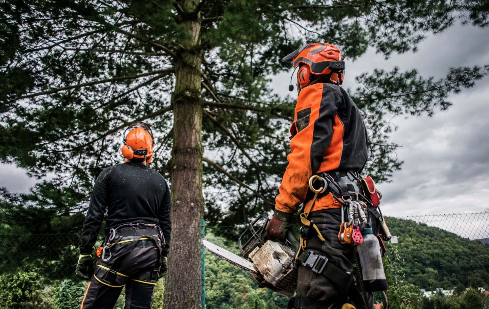
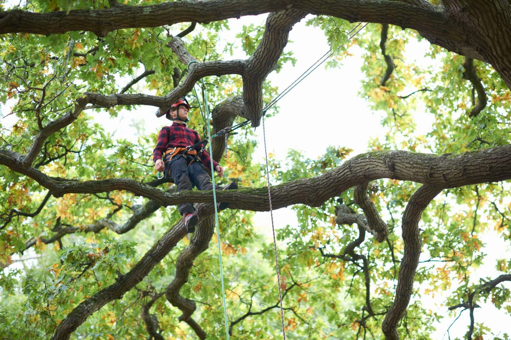
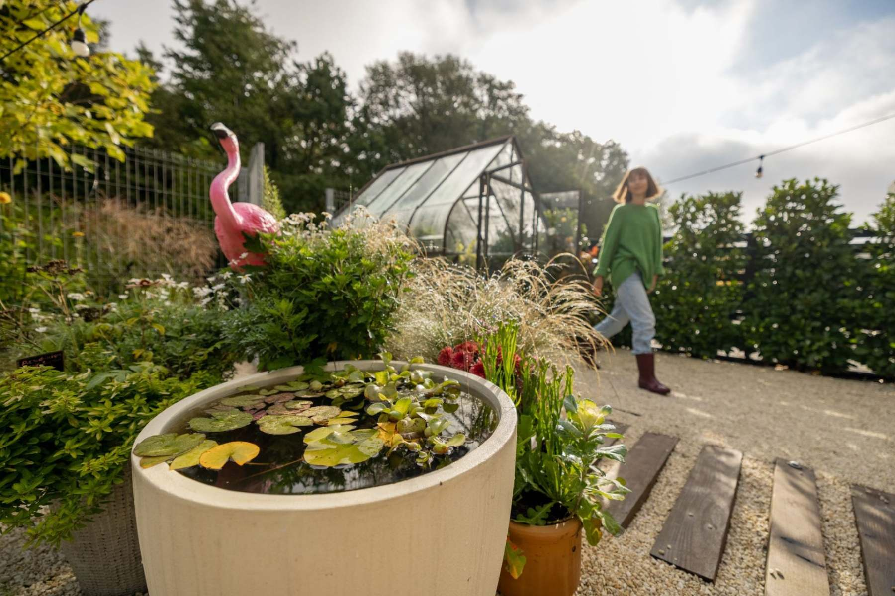

Controlled felling
Precision cuts for difficult timber and tight-access sites.
Sectional removal, directional felling and careful dismantling for roadside hazards, gardens, estates and commercial plots.
Staffordshire tree surgery
Ward Tree Services delivers careful, controlled arboriculture for homes, estates, farms and trade sites. From complex removals to crown work and clearance, every job is planned around safety, access and a clean finish.

Fully planned access
Rigging, reduction and clearance with a site-first method.
Project highlights
The best trade sites do not just list services. They show the work in a way that helps customers understand risk, method and outcome before they call.

Controlled felling
Sectional removal, directional felling and careful dismantling for roadside hazards, gardens, estates and commercial plots.
Clearance & grinding
Stumps, brash, overgrowth and garden waste are managed with a practical finish for landscaping, fencing or the next stage of outdoor work.

Crown work
Crown reductions, deadwood removal and clearance pruning are shaped around the tree, the structure nearby and the future health of the canopy.
Request an estimate
Share the essentials and Ward Tree Services will come back with the right next step. For emergency obstruction or storm damage, call directly.
07495 060647